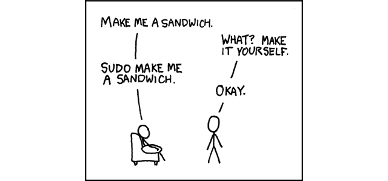

Shell Styling Guide
Background
Which Shell to Use
Bash is the only shell scripting language permitted for executables.
Executables must start with #! /usr/bin/env bash and a minimum number of flags. Use set to set shell options so that calling your script as bash script_name does not break its functionality.
Restricting all executable shell scripts to bash gives us a consistent shell language that's installed on all our machines.
The only exception to this is where you're forced to by whatever you're coding for. One example of this is Solaris SVR4 packages which require plain Bourne shell for any scripts.
When to Use Shell
Shell should only be used for small utilities or simple wrapper scripts.
While shell scripting isn't a development language, it is used for writing various utility scripts throughout any system. This style guide is more a recognition of its use rather than a suggestion that it be used for widespread deployment.
Some guidelines:
-
If you're mostly calling other utilities and are doing relatively little data manipulation, shell is an acceptable choice for the task.
-
If performance matters, use something other than shell.
-
If you are writing a script that is more than 100 lines long, or that uses non-straightforward control flow logic, you should rewrite it in a more structured language now. Bear in mind that scripts grow. Rewrite your script early to avoid a more time-consuming rewrite at a later date.
-
When assessing the complexity of your code (e.g. to decide whether to switch languages) consider whether the code is easily maintainable by people other than its author.
Shell Files and Interpreter Invocation
File Extensions
Executables should have no extension (strongly preferred) or a .sh extension. Libraries must have a .sh extension and should not be executable.
It is not necessary to know what language a program is written in when executing it and shell doesn't require an extension so we prefer not to use one for executables.
However, for libraries it's important to know what language it is and sometimes there's a need to have similar libraries in different languages. This allows library files with identical purposes but different languages to be identically named except for the language-specific suffix.
SUID/GUID
Set owner User ID up on execution (SUID) Set Group ID up on execution SGID are forbidden on shell scripts.
There are too many security issues with shell that make it nearly impossible to secure sufficiently to allow SUID/SGID. While bash does make it difficult to run SUID, it's still possible on some platforms which is why we're being explicit about banning it.
Use Super user do sudo to provide elevated access if you need it.
{width="60%"}
Environment
STDOUT vs STDERR
All error messages should go to STDERR.
This makes it easier to separate normal status from actual issues.
A function to print out error messages along with other status information is recommended.
$* means all arguments passed into the function or script.
Additionally, you'll notice that the date is set to the ISO 8601 standard.
#!/usr/bi/env bash
#
# Perform some system saving script.
err() {
echo "[$(date +'%Y-%m-%dT%H:%M:%S%z')]: $*" >&2
}
if ! do_something; then
err "Unable to do_something"
exit 1
fi
Comments
File Header
Start each file with a description of its contents.
Every file must have a top-level comment including a brief overview of its contents. A copyright notice and author information are optional.
Example:
#!/usr/bi/env bash
#
# Perform some system saving script.
Function Comments
Any function that is not both obvious and short must be commented. Any function in a library must be commented regardless of length or complexity.
It should be possible for someone else to learn how to use your program or to use a function in your library by reading the comments (and self-help, if provided) without reading the code.
All function comments should describe the intended API behaviour using:
-
Description of the function.
-
Globals: List of global variables used and modified.
-
Arguments: Arguments taken.
-
Outputs: Output to STDOUT or STDERR.
-
Returns: Returned values other than the default exit status of the last command run.
Example:
#!/usr/bi/env bash
#
# Perform some system saving script.
err() {
echo "[$(date +'%Y-%m-%dT%H:%M:%S%z')]: $*" >&2
}
if ! do_something; then
err "Unable to do_something"
exit 1
fi
#######################################
# Cleanup files from the backup directory.
# Globals:
# BACKUP_DIR
# SYSTEMTOOL_SID
# Arguments:
# None
#######################################
function cleanup() {
…
}
#######################################
# Get configuration directory.
# Globals:
# SOMEDIR
# Arguments:
# None
# Outputs:
# Writes location to stdout
#######################################
function get_dir() {
echo "${SOMEDIR}"
}
#######################################
# Delete a file in a sophisticated manner.
# Arguments:
# File to delete, a path.
# Returns:
# 0 if thing was deleted, non-zero on error.
#######################################
function del_thing() {
rm "$1"
}
Implementation Comments
Comment tricky, non-obvious, interesting or important parts of your code.
This follows general coding comment practice. Don't comment everything. If there's a complex algorithm or you're doing something out of the ordinary, put a short comment in.
TODO Comments
# TODO(someperson): Handle the unlikely edge cases (bug ####)
Formatting
While you should follow the style that's already there for files that you're modifying, the following are required for any new code.
Indentation
Indent 2 spaces. No tabs.
Use blank lines between blocks to improve readability. Indentation is two spaces. Whatever you do, don't use tabs. For existing files, stay faithful to the existing indentation.
Line Length and Long Strings
Maximum line length is 80 characters.
If you have to write strings that are longer than 80 characters, this should be done with a here document or an embedded newline if possible. Literal strings that have to be longer than 80 chars and can't sensibly be split are ok, but it's strongly preferred to find a way to make it shorter.
# DO use 'here document's
cat <<END
I am an exceptionally long
string.
END
# Embedded newlines are ok too
long_string="I am an exceptionally
long string."
Pipelines
Pipelines should be split one per line if they don't all fit on one line.
If a pipeline all fits on one line, it should be on one line.
If not, it should be split at one pipe segment per line with the pipe on the newline and a 2 space indent for the next section of the pipe. This applies to a chain of commands combined using | as well as to logical compounds using || and &&.
# All fits on one line
command1 | command2
# Long commands
command1 \
| command2 \
| command3 \
| command4
Loops
Put ; do and ; then on the same line as the while, for or if.
Loops in shell are a bit different, but we follow the same principles as with braces when declaring functions. That is: : then and ; do should be on the same line as the if/for/while. else should be on its own line and closing statements should be on their own line vertically aligned with the opening statement.
# If inside a function, consider declaring the loop variable as
# a local to avoid it leaking into the global environment:
# local dir
for dir in "${dirs_to_cleanup[@]}"; do
if [[ -d "${dir}/${SYSTEMTOOL_SID}" ]]; then
log_date "Cleaning up old files in ${dir}/${SYSTEMTOOL_SID}"
rm "${dir}/${SYSTEMTOOL_SID}/"*
if (( $? != 0 )); then
error_message
fi
else
mkdir -p "${dir}/${SYSTEMTOOL_SID}"
if (( $? != 0 )); then
error_message
fi
fi
done
Case Statement
-
Indent alternatives by 2 spaces.
-
A one-line alternative needs a space after the close parenthesis of the pattern and before the
;;. -
Long or multi-command alternatives should be split over multiple lines with the pattern, actions, and
;;on separate lines.
The matching expressions are indented one level from the case and esac. Multiline actions are indented another level. In general, there is no need to quote match expressions. Pattern expressions should not be preceded by an open parenthesis. Avoid the ;& and ;;& notations.
case "${expression}" in
a)
variable="…"
some_command "${variable}" "${other_expr}" …
;;
absolute)
actions="relative"
another_command "${actions}" "${other_expr}" …
;;
*)
error "Unexpected expression '${expression}'"
;;
esac
Simple commands may be put on the same line as the pattern and ;; as long as the expression remains readable. This is often appropriate for single-letter option processing. When the actions don't fit on a single line, put the pattern on a line on its own, then the actions, then ;; also on a line of its own. When on the same line as the actions, use a space after the close parenthesis of the pattern and another before the ;;.
Variable Expansion
In order of precedence: Stay consistent with what you find; quote your variables; prefer "$var" over ''$var''.
These are strongly recommended guidelines but not mandatory regulation. Nonetheless, the fact that it's a recommendation and not mandatory doesn't mean it should be taken lightly or downplayed.
They are listed in order of precedence.
-
Stay consistent with what you find for existing code.
-
Quote variables, see section below.
-
Don't brace-delimit single character shell specials / positional parameters, unless strictly necessary or avoiding deep confusion
Prefer brace-delimiting all other variables.
# Section of *recommended* cases.
# Preferred style for 'special' variables:
echo "Positional: $1" "$5" "$3"
echo "Specials: !=$!, -=$-, _=$_. ?=$?, #=$# *=$* @=$@ \$=$$ …"
# Braces necessary:
echo "many parameters: ${10}"
# Braces avoiding confusion:
# Output is "a0b0c0"
set -- a b c
echo "${1}0${2}0${3}0"
# Preferred style for other variables:
echo "PATH=${PATH}, PWD=${PWD}, mine=${some_var}"
while read -r f; do
echo "file=${f}"
done < <(find /tmp)
# Section of *discouraged* cases
# Unquoted vars, unbraced vars, brace-delimited single letter
# shell specials.
echo a=$avar "b=$bvar" "PID=${$}" "${1}"
# Confusing use: this is expanded as "${1}0${2}0${3}0",
# not "${10}${20}${30}
set -- a b c
echo "$10$20$30"
NOTE: Using braces in
$varis not a form of quoting."double quites mus be used as well.
Quoting
-
Always quote strings containing variables, command substitutions, spaces or shell meta characters, unless careful unquoted expansion is required or it's a shell-internal integer (see next point).
-
Use arrays for safe quoting of lists of elements, especially command-line flags. See Arrays below.
-
Optionally quote shell-internal, readonly special variables that are defined to be integers:
$?,$#,$$,$!(man bash). Prefer quoting of "named" internal integer variables, e.g. PPID etc for consistency. -
Prefer quoting strings that are "words" (as opposed to command options or path names).
-
Never quote literal integers.
-
Be aware of the quoting rules for pattern matches in
[[ ]]. See the Test,[ ], and[[ ]]section below. -
Use
$unless you have a specific reason to use$*, such as simply appending the arguments to a string in a message or log.
# 'Single' quotes indicate that no substitution is desired.
# "Double" quotes indicate that substitution is required/tolerated.
# Simple examples
# "quote command substitutions"
# Note that quotes nested inside "$()" don't need escaping.
flag="$(some_command and its args "$@" 'quoted separately')"
# "quote variables"
echo "${flag}"
# Use arrays with quoted expansion for lists.
declare -a FLAGS
FLAGS=( --foo --bar='baz' )
readonly FLAGS
mybinary "${FLAGS[@]}"
# It's ok to not quote internal integer variables.
if (( $# > 3 )); then
echo "ppid=${PPID}"
fi
# "never quote literal integers"
value=32
# "quote command substitutions", even when you expect integers
number="$(generate_number)"
# "prefer quoting words", not compulsory
readonly USE_INTEGER='true'
# "quote shell meta characters"
echo 'Hello stranger, and well met. Earn lots of $$$'
echo "Process $$: Done making \$\$\$."
# "command options or path names"
# ($1 is assumed to contain a value here)
grep -li Hugo /dev/null "$1"
# Less simple examples
# "quote variables, unless proven false": ccs might be empty
git send-email --to "${reviewers}" ${ccs:+"--cc" "${ccs}"}
# Positional parameter precautions: $1 might be unset
# Single quotes leave regex as-is.
grep -cP '([Ss]pecial|\|?characters*)$' ${1:+"$1"}
# For passing on arguments,
# "$@" is right almost every time, and
# $* is wrong almost every time:
#
# * $* and $@ will split on spaces, clobbering up arguments
# that contain spaces and dropping empty strings;
# * "$@" will retain arguments as-is, so no args
# provided will result in no args being passed on;
# This is in most cases what you want to use for passing
# on arguments.
# * "$*" expands to one argument, with all args joined
# by (usually) spaces,
# so no args provided will result in one empty string
# being passed on.
# (Consult `man bash` for the nit-grits ;-)
(set -- 1 "2 two" "3 three tres"; echo $#; set -- "$*"; echo "$#, $@")
(set -- 1 "2 two" "3 three tres"; echo $#; set -- "$@"; echo "$#, $@")
Features and Bugs
Shell Check
The (https://www.shellcheck.net) project identifies common bugs and warnings for your shell scripts. It is recommended for all scripts, large or small.
Command Substitution
Use $(command) instead of backticks.
Nested backticks require escaping the inner ones with \. The $(command) format doesn't change when nested and is easier to read.
Example:
# This is preferred:
var="$(command "$(command1)")"
# This is not:
var="`command \`command1\``"
Test, [[ ]], and [ ]
[[ ]] is preferred over [ ], test and /usr/bin/[.
[[ ]] reduces errors as no path name expansion or word splitting takes place between [[ and ]]. In addition, [[ ... ]] allows for regular
expression matching, while [ ] does not.
# This ensures the string on the left is made up of characters in
# the alnum character class followed by the string name.
# Note that the RHS should not be quoted here.
if [[ "filename" =~ ^[[:alnum:]]+name ]]; then
echo "Match"
fi
# This matches the exact pattern "f*" (Does not match in this case)
if [[ "filename" == "f*" ]]; then
echo "Match"
fi
NOTE: For the gory details, see E14 at http://tiswww.case.edu/php/chet/bash/FAQ
Testing Strings
Use quotes rather than filler characters where possible.
Bash is smart enough to deal with an empty string in a test. So, given that the code is much easier to read, use tests for empty/non-empty strings or empty strings rather than filler characters.
# Do this:
if [[ "${my_var}" == "some_string" ]]; then
do_something
fi
# -z (string length is zero) and -n (string length is not zero) are
# preferred over testing for an empty string
if [[ -z "${my_var}" ]]; then
do_something
fi
# This is OK (ensure quotes on the empty side), but not preferred:
if [[ "${my_var}" == "" ]]; then
do_something
fi
# Not this:
if [[ "${my_var}X" == "some_stringX" ]]; then
do_something
fi
To avoid confusion about what you're testing for, explicitly use -z or -n.
# Use this
if [[ -n "${my_var}" ]]; then
do_something
fi
# Instead of this
if [[ "${my_var}" ]]; then
do_something
fi
For clarity, use == for equality rather than = even though both work. The former encourages the use of [[ and the latter can be confused with an assignment. However, be careful when using < and > in [[ ]] which performs a lexicographical comparison. Use (( )) or -lt and -gt for numerical comparison.
# Use this
if [[ "${my_var}" == "val" ]]; then
do_something
fi
if (( my_var > 3 )); then
do_something
fi
if [[ "${my_var}" -gt 3 ]]; then
do_something
fi
# Instead of this
if [[ "${my_var}" = "val" ]]; then
do_something
fi
# Probably unintended lexicographical comparison.
if [[ "${my_var}" > 3 ]]; then
# True for 4, false for 22.
do_something
fi
Wildcard Expansion of Filenames
Use an explicit path when doing wildcard expansion of filenames.
As filenames can begin with a -, it's a lot safer to expand wildcards with ./* instead of *
# Here's the contents of the directory:
# -f -r somedir somefile
# Incorrectly deletes almost everything in the directory by force
user@host$ rm -v *
removed directory: `somedir'
removed `somefile'
# As opposed to:
user@host$ rm -v ./*
removed `./-f'
removed `./-r'
rm: cannot remove `./somedir': Is a directory
removed `./somefile'
Eval
eval should be avoided. eval munges the input when used for assignment to variables and can set variables without makingit possible to check what those variables were.
variable="$(eval some_function)"
Arrays
Bash arrays should be used to store lists of elements, to avoid quoting complications. This particularly applies to argument lists. Arrays should not be used to facilitate more complex data structures.
Arrays store an ordered collection of strings, and can be safely expanded into individual elements for a command or loop.
Using a single string for multiple command arguments should be avoided, as it inevitably leads to authors using eval or trying to nest quotes inside the string, which does not give reliable or readable results and leads to needless complexity.
# An array is assigned using parentheses, and can be appended to
# with +=( … ).
declare -a flags
flags=(--foo --bar='baz')
flags+=(--greeting="Hello ${name}")
mybinary "${flags[@]}"
# Don’t use strings for sequences.
flags='--foo --bar=baz'
flags+=' --greeting="Hello world"' # This won’t work as intended.
mybinary ${flags}
# Command expansions return single strings, not arrays. Avoid
# unquoted expansion in array assignments because it won’t
# work correctly if the command output contains special
# characters or whitespace.
# This expands the listing output into a string, then does special keyword
# expansion, and then whitespace splitting. Only then is it turned into a
# list of words. The ls command may also change behavior based on the user's
# active environment!
declare -a files=($(ls /directory))
# The get_arguments writes everything to STDOUT, but then goes through the
# same expansion process above before turning into a list of arguments.
mybinary $(get_arguments)
Array Pros
-
Using Arrays allows lists of things without confusing quoting semantics. Conversely, not using arrays leads to misguided attempts to nest quoting inside a string.
-
Arrays make it possible to safely store sequences/lists of arbitrary strings, including strings containing whitespace.
Array Cons
Using arrays can risk a script's complexity growing.
Array Decision
Arrays should be used to safely create and pass around lists. In particular, when building a set of command arguments, use arrays to avoid confusing quoting issues. Use quoted expansion -- "${array[]}" -- to access arrays. However, if more advanced data manipulation is required, shell scripting should be avoided altogether.
Pipes to While
Use process substitution or the readarray builtin (bash4+) in preference to piping to while. Pipes create a subshell, so any variables modified within a pipeline do not propagate to the parent shell.
The implicit subshell in a pipe to while can introduce subtle bugs that are hard to track down.
last_line='NULL'
your_command | while read -r line; do
if [[ -n "${line}" ]]; then
last_line="${line}"
fi
done
# This will always output 'NULL'!
echo "${last_line}"
Using process substitution also creates a subshell. However, it allows redirecting from a subshell to a while without putting the while (or any other command) in a subshell.
last_line='NULL'
while read line; do
if [[ -n "${line}" ]]; then
last_line="${line}"
fi
done < <(your_command)
# This will output the last non-empty line from your_command
echo "${last_line}"
Alternatively, use the readarray builtin to read the file into an array, then loop over the array’s con-tents. Notice that (for the same reason as above) you need to use a process substitution with readarray rather than a pipe, but with the advantage that the input generation for the loop is located beforeit, rather than after.
last_line='NULL'
readarray -t lines < <(your_command)
for line in "${lines[@]}"; do
if [[ -n "${line}" ]]; then
last_line="${line}"
fi
done
echo "${last_line}"
NOTE: Be cautious using a for-loop to iterate over output, as in for var in
$(...), as theoutput is split by whitespace, not by line. Sometimes you will know this is safe because theoutput can’t contain any unexpected whitespace, but where this isn’t obvious or doesn’timprove readability (such as a long command inside$(...)), awhileread loop orreadarrayis often safer and clearer.
Arithmetic
Always use (( )) or $(( )) rather than let or $[ ] or expr.
Never use the $[ ] syntax, the expr command, or the let built-in.
< and > don't perform numerical comparison inside [[ ]] expressions (they perform lexicographical comparisons instead). For preference, don't use [[ ]] at all for numeric comparisons, use (( ... )) instead.
It is recommended to avoid using (( )) as a standalone statement, and otherwise be wary of its expression evaluating to zero
- particularly with set
-eenabled. For example,set -e; i=0. (( i++ ))will cause the shell to exit.
# Simple calculation used as text - note the use of $(( … )) within
# a string.
echo "$(( 2 + 2 )) is 4"
# When performing arithmetic comparisons for testing
if (( a < b )); then
…
fi
# Some calculation assigned to a variable.
(( i = 10 * j + 400 ))
# This form is non-portable and deprecated
i=$[2 * 10]
# Despite appearances, 'let' isn't one of the declarative keywords,
# so unquoted assignments are subject to globbing wordsplitting.
# For the sake of simplicity, avoid 'let' and use (( … ))
let i="2 + 2"
# The expr utility is an external program and not a shell builtin.
i=$( expr 4 + 4 )
# Quoting can be error prone when using expr too.
i=$( expr 4 '*' 4 )
Stylistic considerations aside, the shell’s built-in arithmetic is many times faster thanexpr.When using variables, the ${var} (and $var) forms are not required within $(( )). The shell knows to look up var for you, and omitting the ${...} leads to cleaner code. This is slightly contrary to theprevious rule about always using braces, so this is a recommendation only.
# N.B.: Remember to declare your variables as integers when
# possible, and to prefer local variables over globals.
local -i hundred=$(( 10 * 10 ))
declare -i five=$(( 10 / 2 ))
# Increment the variable "i" by three.
# Note that:
# - We do not write ${i} or $i.
# - We put a space after the (( and before the )).
(( i += 3 ))
# To decrement the variable "i" by five:
(( i -= 5 ))
# Do some complicated computations.
# Note that normal arithmetic operator precedence is observed.
hr=2
min=5
sec=30
echo $(( hr * 3600 + min * 60 + sec )) # prints 7530 as expected
Naming Conventions
Function Names
Lower-case, with underscores to separate words. Separate libraries with ::. Parentheses are required after the function name. The keyword function is optional, but must be used consistently throughout a project.
If you're writing single functions, use lowercase and separate words with underscore. If you're writing a package, separate package names with ::. Braces must be on the same line as the function name and no space between the function name and the parenthesis.
# Single function
my_func() {
…
}
# Part of a package
mypackage::my_func() {
…
}
The function keyword is extraneous when () is present after the function name, but enhances quickidentification of functions
Variable Names
Variables names for loops should be similarly named for any variable you're looping through.
for zone in "${zones[@]}"; do
something_with "${zone}"
done
Constants and Environment Variable Names
All caps, separated with underscores, declared at the top of the file.
Constants and anything exported to the environment should be capitalized.
# Constant
readonly PATH_TO_FILES='/some/path'
# Both constant and environment
declare -xr SYSTEMTOOL_SID='PROD'
Some things become constant at their first setting (for example, via getopts). Thus, it's OK to set a constant in getopts or based on a condition, but
it should be made readonly immediately afterwards. For the sake of clarity readonly or export is recommended instead of the equivalent declare commands.
VERBOSE='false'
while getopts 'v' flag; do
case "${flag}" in
v) VERBOSE='true' ;;
esac
done
readonly VERBOSE
Source Files
Lowercase, with underscores to separate words if desired.
This is for consistency with other code styles in used in industry: maketemplate or make_template but not make-template.
Read-only Variables
Use readonly or declare -r to ensure they're read only.
As globals are widely used in shell, it's important to catch errors when working with them. When you declare a variable that is meant to be read-only, make this explicit.
zip_version="$(dpkg --status zip | grep Version: | cut -d ' ' -f 2)"
if [[ -z "${zip_version}" ]]; then
error_message
else
readonly zip_version
fi
Use Local Variables
Declare function-specific variables with local. Declaration and assignment should be on different lines.
Ensure that local variables are only seen inside a function and its children by using local when declaring them. This avoids polluting the global name space and inadvertently setting variables that may have significance outside the function.
Declaration and assignment must be separate statements when the assignment value is provided by a command substitution; as the local builtin does not propagate the exit code from the command substitution.
my_func2() {
local name="$1"
# Separate lines for declaration and assignment:
local my_var
my_var="$(my_func)"
(( $? == 0 )) || return
…
}
my_func2() {
# DO NOT do this:
# $? will always be zero, as it contains the exit code of 'local', not my_func
local my_var="$(my_func)"
(( $? == 0 )) || return
…
}
Function Locations
Put all functions together in the file just below constants. Don't hide executable code between functions. Doing so makes the code difficult to follow and results in nasty surprises when debugging.
If you've got functions, put them all together near the top of the file. Only includes, set statements and setting constants may be done before declaring functions.
main
A function called `` is required for scripts long enough to contain at least one other function.
In order to easily find the start of the program, put the main program in a function called main as the bottom most function. This provides consistency with the rest of the code base as well as allowing you to define more variables as local (which can't be done if the main code is not a function). The last non-comment line in the file should be a call to main:
main "$@"
Obviously, for short scripts where it's just a linear flow, main is overkill and so is not required.
Calling Commands
Checking Return Values
Always check return values and give informative return values.
For unpiped commands, use $? or check directly via an if statement to keep it simple.
Example:
if ! mv "${file_list[@]}" "${dest_dir}/"; then
echo "Unable to move ${file_list[*]} to ${dest_dir}" >&2
exit 1
fi
# Or
mv "${file_list[@]}" "${dest_dir}/"
if (( $? != 0 )); then
echo "Unable to move ${file_list[*]} to ${dest_dir}" >&2
exit 1
fi
Bash also has the PIPESTATUS variable that allows checking of the return code from all parts of a pipe. If it's only necessary to check success or failure of the whole pipe, then the following is acceptable:
tar -cf - ./* | ( cd "${dir}" && tar -xf - )
if (( PIPESTATUS[0] != 0 || PIPESTATUS[1] != 0 )); then
echo "Unable to tar files to ${dir}" >&2
fi
However, as PIPESTATUS will be overwritten as soon as you do any other command, if you need to act differently on errors based on where it happened in the pipe, you'll need to assign PIPESTATUS to another variable immediately after running the command (don't forget that [ is a command and will wipe out PIPESTATUS).
tar -cf - ./* | ( cd "${DIR}" && tar -xf - )
return_codes=( "${PIPESTATUS[@]}" )
if (( return_codes[0] != 0 )); then
do_something
fi
if (( return_codes[1] != 0 )); then
do_something_else
fi
Builtin Commands vs. External Commands {#subsec:Built_cmds}
Given the choice between invoking a shell builtin and invoking a separate process, choose the builtin.
We prefer the use of builtins such as the Parameter Expansion functions in bash(1) as it's more robust and portable (especially when compared to things like sed).
Examples:
# Prefer this:
addition=$(( X + Y ))
substitution="${string/#foo/bar}"
# Instead of this:
addition="$(expr "${X}" + "${Y}")"
substitution="$(echo "${string}" | sed -e 's/^foo/bar/')"